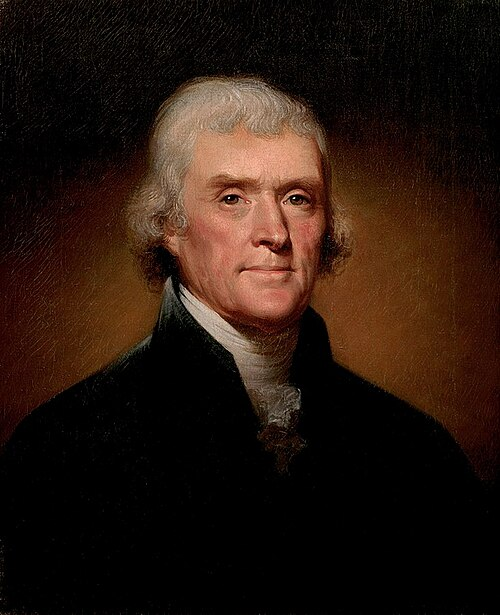
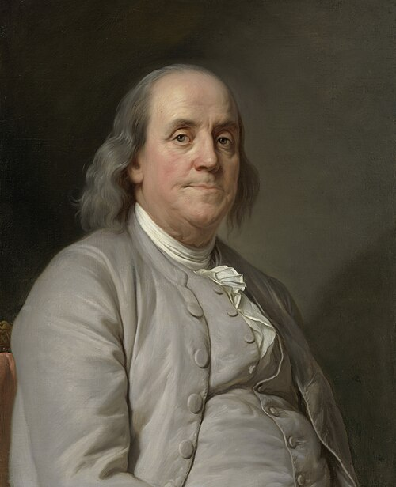
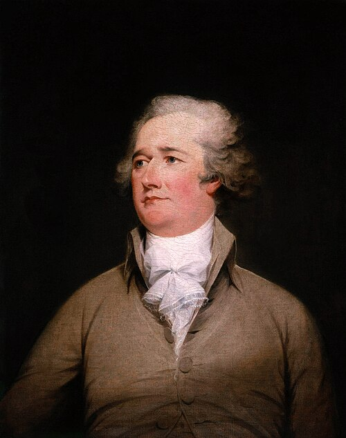
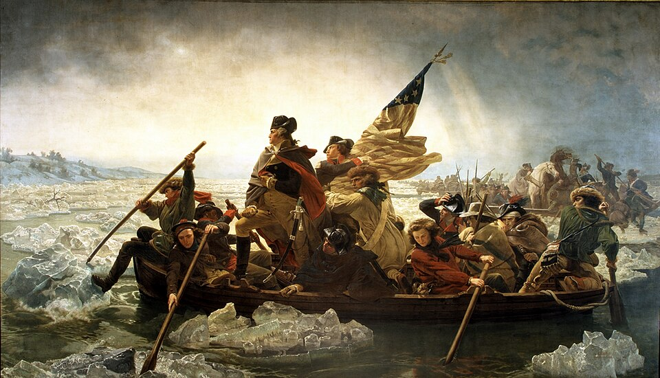
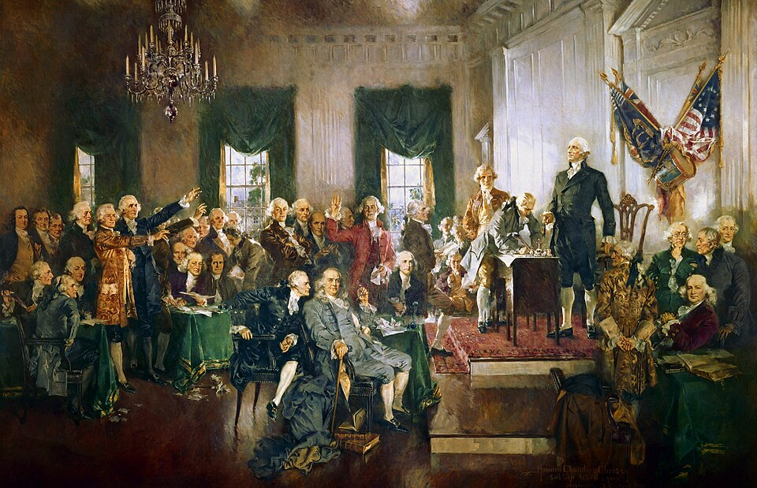
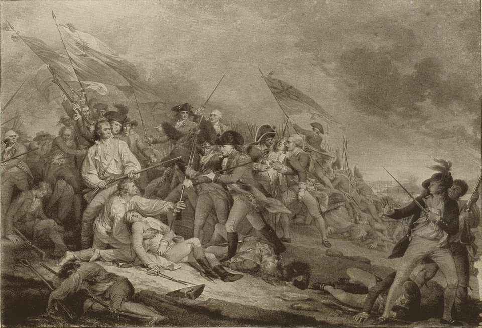
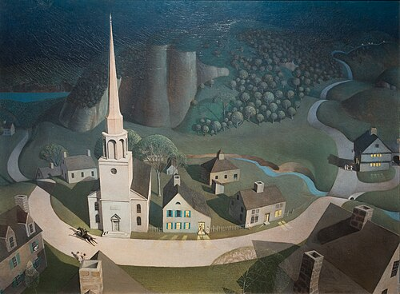

American Revolution
No Taxation Without Representation — The Birth of a Nation
1765 – 1783 · Thirteen Colonies Become One Nation
The Founding Fathers

George Washington
1732–1799 · Commander & First President
Led the Continental Army through 8 years of war despite constant defeats and retreats. His crossing of the Delaware River on Christmas 1776 turned the tide. Refused to become king; his voluntary surrender of power set the democratic standard.

Thomas Jefferson
1743–1826 · Author of the Declaration
Primary author of the Declaration of Independence, crafted in 17 days. "All men are created equal" — perhaps the most consequential phrase in political history. Third President, doubled the nation's size with the Louisiana Purchase.

Benjamin Franklin
1706–1790 · Diplomat & Renaissance Man
Inventor, printer, diplomat, philosopher. Secured the French alliance that provided the troops, ships, and money that won the Revolution. At the Constitutional Convention at age 81 — the oldest delegate. "We must all hang together, or most assuredly we will all hang separately."
John Adams
1735–1826 · Second President
The most important advocate for independence in the Continental Congress. Nominated Washington as commander, championed the Declaration. His defense of the British soldiers after the Boston Massacre — though politically damaging — showed his commitment to rule of law.

Alexander Hamilton
1755–1804 · Architect of the Economy
Washington's aide-de-camp, led a bayonet charge at Yorktown. As first Secretary of the Treasury, created the national bank, funded the debt, and built the financial foundation of the new nation. Shot by Aaron Burr in 1804.
Patrick Henry
1736–1799 · Voice of Liberty
Virginia orator whose speeches inflamed colonial anger. "Give me liberty, or give me death!" at the Virginia Convention in 1775 electrified the patriot cause. Opposed the Constitution as giving too much power to the federal government.
Words That Changed the World
"We hold these truths to be self-evident, that all men are created equal, that they are endowed by their Creator with certain unalienable Rights, that among these are Life, Liberty and the pursuit of Happiness."
— Thomas Jefferson, Declaration of Independence, July 4, 1776
"Give me liberty, or give me death!"
— Patrick Henry, Virginia Convention, March 23, 1775
"These are the times that try men's souls. The summer soldier and the sunshine patriot will, in this crisis, shrink from the service of their country."
— Thomas Paine, The American Crisis, December 1776
"I only regret that I have but one life to give for my country."
— Nathan Hale, before his execution by the British, 1776
"The advancement and diffusion of knowledge is the only guardian of true liberty."
— James Madison, Father of the Constitution
"When in the course of human events, it becomes necessary for one people to dissolve the political bands which have connected them with another..."
— Thomas Jefferson, opening of the Declaration of Independence
Timeline of the American Revolution
1765
Stamp Act Ignites Resistance
Britain imposes the Stamp Act — taxes on all printed materials. American colonists erupt: "No taxation without representation!" The Sons of Liberty form. The act is repealed in 1766, but the principle is established.
1773
Boston Tea Party
Sons of Liberty disguised as Mohawk Indians dump 342 chests of British tea into Boston Harbor to protest the Tea Act. Britain responds with the Coercive Acts — which only unify the colonies further.
Apr 1775
The Shot Heard Round the World
British troops march on Concord to seize colonial arms. Paul Revere warns: "The Regulars are out!" At Lexington and Concord, the first shots of the Revolution are fired.
Jul 1776
Declaration of Independence
The Continental Congress adopts Jefferson's Declaration of Independence on July 4. Thirteen colonies formally become the United States of America — the world's first modern republic based on Enlightenment principles.
Oct 1777
Saratoga — The Turning Point
American forces defeat and capture British General Burgoyne's army at Saratoga. France recognizes American independence and enters the war as an ally — providing the decisive military support the Revolution needed.
Oct 1781
Yorktown — The Last Battle
Washington and French forces under Rochambeau trap Cornwallis at Yorktown. The French fleet blocks British relief. Cornwallis surrenders on October 19 — effectively ending the war. The band plays "The World Turned Upside Down."
1783
Treaty of Paris
Britain recognizes American independence. The US gains territory from the Atlantic to the Mississippi River. The world's great experiment in democratic self-governance begins.
The Flag — Stars and Stripes
Click to add a star — the flag grows as new states join the Union
Gallery
George Washington, 1796
The Williamstown portrait by Gilbert Stuart, one of the most recognizable images in American history. Washington led the Continental Army for 8 years and set the democratic precedent by voluntarily relinquishing power.
Thomas Jefferson, 1800
Portrait by Rembrandt Peale. Jefferson drafted the Declaration of Independence in 17 days. "All men are created equal" — perhaps the most consequential phrase in political history — was his.
Benjamin Franklin, 1778
Portrait by Joseph-Siffrein Duplessis, painted in Paris. As US Minister to France, Franklin secured the French alliance — the troops, ships, and money that ultimately won the Revolution.
Alexander Hamilton, 1806
Portrait by John Trumbull. Hamilton served as Washington's aide-de-camp, led a bayonet charge at Yorktown, and as first Secretary of the Treasury built the financial foundations of the American republic.

Washington Crossing the Delaware, 1776
Emanuel Leutze's iconic 1851 painting. Washington's Christmas night crossing and surprise attack on Hessian troops at Trenton was the turning point that saved the Revolution from total collapse.

Signing of the Constitution, 1787
Howard Chandler Christy's 1940 painting. After winning independence, the Founding Fathers faced an equally daunting task: creating a government that would last. The Constitution, ratified in 1788, remains the world's oldest written national constitution.

Battle of Bunker Hill, June 1775
John Trumbull's painting of the battle. The colonial militia inflicted massive casualties on British regulars before running out of ammunition. "Don't fire until you see the whites of their eyes." The battle proved colonials could stand against the British army.

The Midnight Ride of Paul Revere, 1931
Grant Wood's iconic painting. On the night of April 18, 1775, Revere rode through Middlesex County to warn colonists that British troops were marching — triggering the first battles of the Revolution at Lexington and Concord.